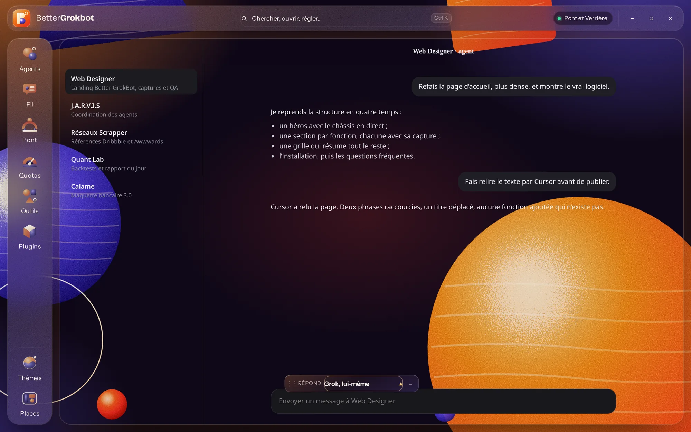
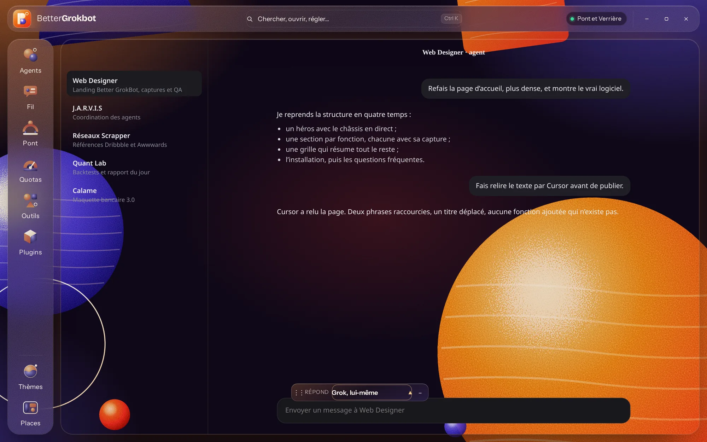
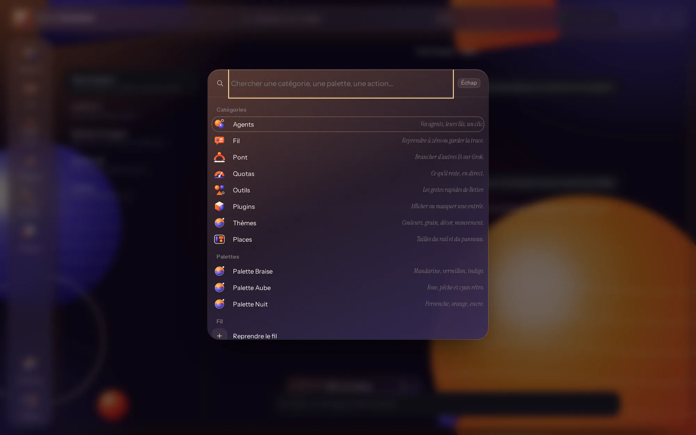
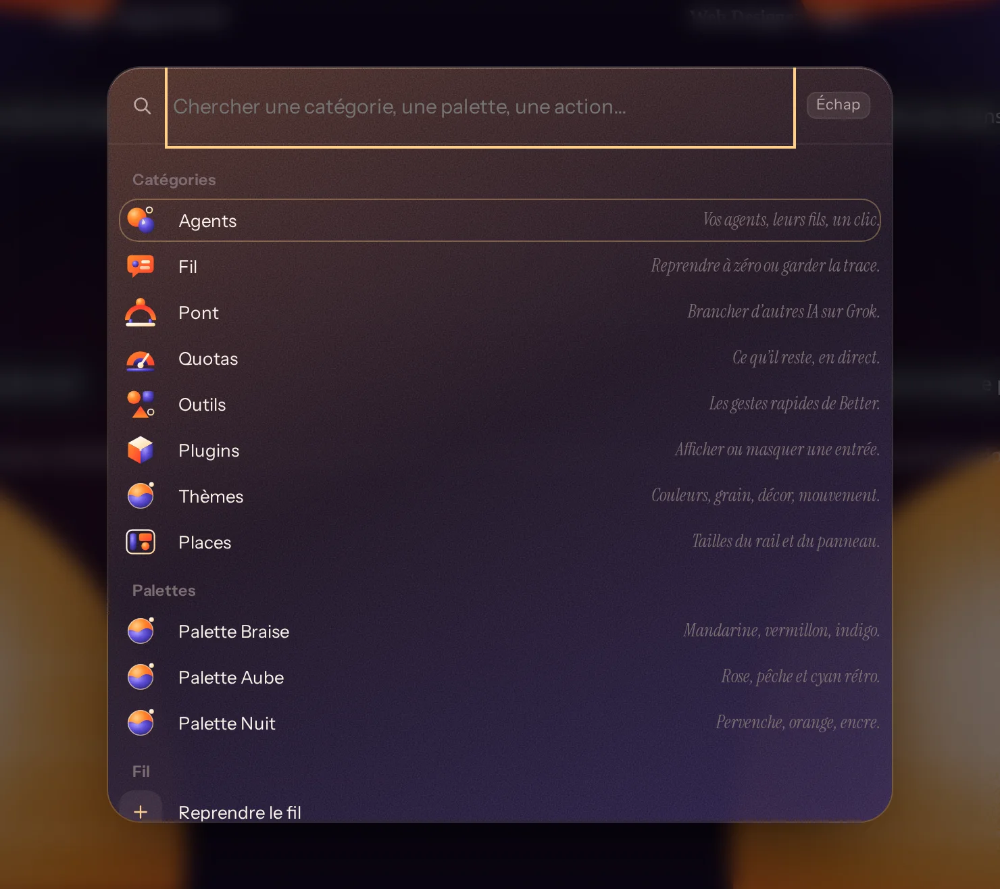
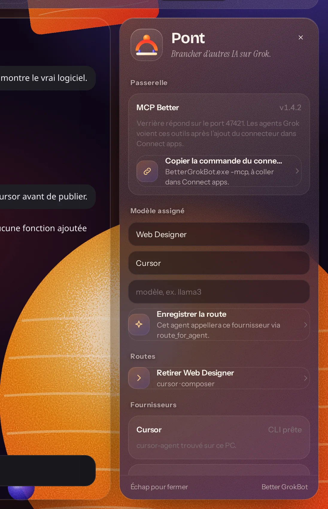
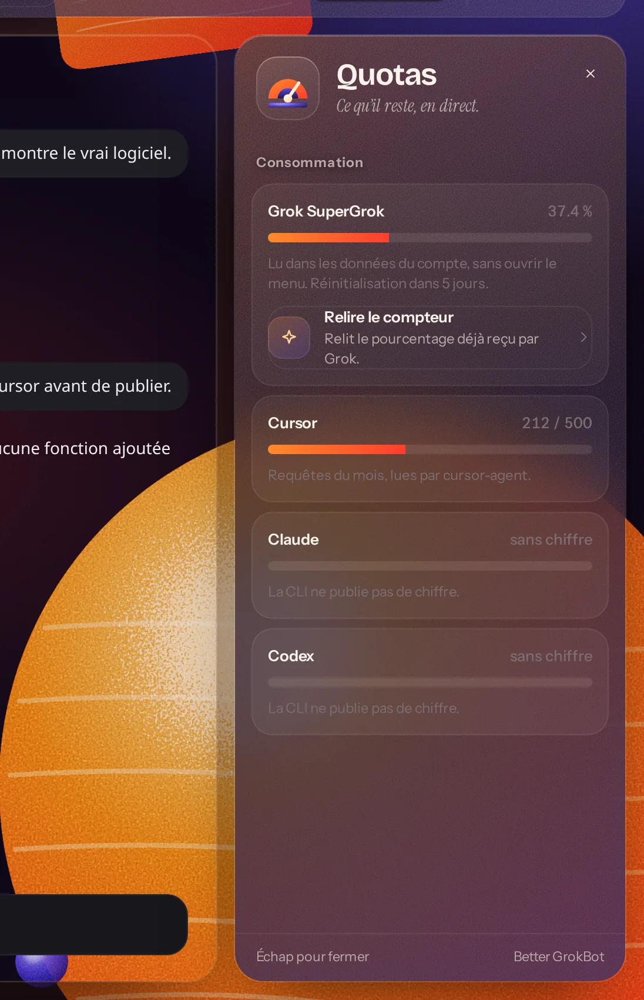
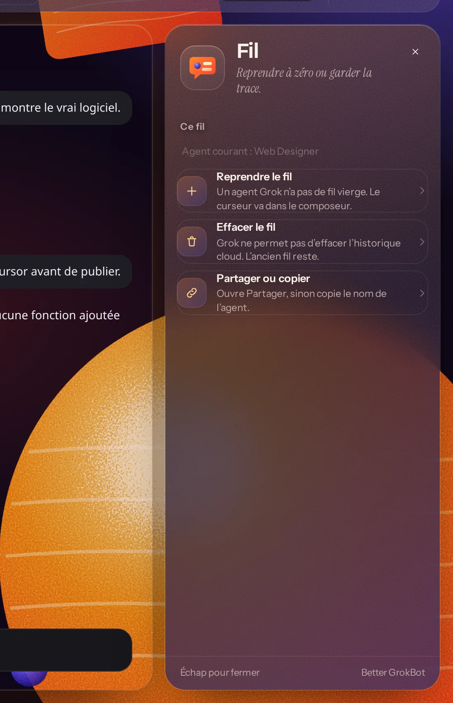

Un creatore di plugin
Parti da un modello, dai un nome al tuo utensile: l'identificatore viene compilato e controllato in fase di inserimento. Icona, versione, spiegazione delle autorizzazioni, editor e anteprima dal vivo. Ctrl Entrée
Better GrokBot è una copia privata di Grok Bot. Aggiunge una guida di navigazione, un Chat IA e un browser web accanto alla conversazione, una tavolozza Ctrl K, la barra Risponde per inviare un messaggio a Cursor, Claude o Codex, quote attive e aggiornamenti che si installano da soli. L'installazione originale rimane ancora intatta.





Grok Bot.exe e app.asar vengono letti in Programs\Grok Bot. Non c'è scritto niente lì.
La copia viene installata in Local\GrokBot-inprocess. L'archivio è lì ricostruito con la cornice.
La finestra che si apre è Better GrokBot. Il tuo Grok Bot originale rimane lì, così com'è.
Disponi le tue applicazioni a riquadri accanto a Grok, come in Hyprland: nove spazi, disposizioni, scorciatoie, finestre mobili. Terminale ed esplora file integrati, estensioni Chrome nel pannello Web e un agente IA che clicca e scrive per te, con la tua conferma.
Aggancia una finestra aperta sul PC: prende il posto di Grok e resta utilizzabile. La Chat IA la vede solo se lo attivi (Cursor, Claude o Codex): ogni messaggio include allora una cattura di quella finestra. Il nuovo pulsante «Collega account» collega i fornitori e la barra si riordina trascinando.
Better parla francese, inglese, spagnolo, tedesco, italiano, portoghese, olandese e polacco e segue la lingua di Windows. Ciascun plugin viene eseguito in uno spazio isolato, con autorizzazioni chiare, un creatore, una galleria e pacchetti da trascinare nella finestra. Schermate reali dalla 1.5.
Parti da un modello, dai un nome al tuo utensile: l'identificatore viene compilato e controllato in fase di inserimento. Icona, versione, spiegazione delle autorizzazioni, editor e anteprima dal vivo. Ctrl Entrée

Ogni plugin viene eseguito nel proprio Worker e fa solo ciò che dichiara. Mai le tue chiavi, token o file.

Contatore di parole, risposte standard, timer di messa a fuoco, meteo senza tasti, conversazione in Markdown. Un clic per installare.

La lingua di Windows al primo avvio, da modificare in System. Seguono date e numeri.

Trascina una cartella, .zip o .bgbplugin: manifest selezionato, autorizzazioni visualizzate, conferma, "Riavvia ora".
Una cronologia dove tutto può essere ricercato, una memoria crittografata che rimane sul PC, progetti collegati a GitHub, un pannello laterale Documenti e la lettura ad alta voce. Schermate reali dalla 1.4; la conversazione Grok è confusa.

Nome, professione, preferenze, ricordi e profili degli armadietti in una cassaforte crittografata con il tuo account Windows. Better prepara un breve contesto da allegare al messaggio, solo quando vuoi.

Cerca tutte le conversazioni indicizzate, i titoli automatici, le cartelle, i tag e l'archivio. Ctrl Maj F

Un pannello laterale di scrittura con anteprima, ricerca e modifica di Grok. Salva in .md, .txt o PDF. Ctrl Maj O

Seleziona un passaggio: citalo, ricordalo, leggilo ad alta voce, invialo al Documento o prosegui da qui con un altro agente.

Il cerchio "Risponde" e la barra destra rimangono 8 px sopra il campo, anche con testo lungo, un'immagine allegata o una finestra stretta.
Le versioni da 1.1 a 1.3 aggiungono una barra laterale di chat per le IA collegate, un browser Web con selezione di elementi, una guida per riporre e scorrere e aggiornamenti completi. Schermate reali dalla 1.3; la conversazione Grok è confusa.
Parla con Cursor, Codex, Claude Code o con un'IA locale nel pannello laterale accanto a Grok. Scelta del modello con loghi, conversazioni mantenute sul PC, Markdown e codice da copiare, confronto fianco a fianco. Niente va a Grok senza il tuo clic. Ctrl Maj A

Una pagina aperta accanto alla conversazione. Il selettore invia un elemento, il suo testo e la sua immagine al campo di input, oppure l'intera pagina a Markdown. Ctrl Maj E

La mappa rimane fissa sopra il campo di input, con la grana. L'elenco mostra i loghi, separa gli AI già pronti da quelli da collegare e si filtra tramite tastiera.

Il nome rimane sotto ciascuna icona in modalità Semplice, mai in Compatta. Appuntare, montare, nascondere; il binario scorre con una barra sottile che non occupa spazio.

Scarica, stampa sha256, chiudi, applica patch e rilancia, sotto un velo transitorio. Facoltativamente, l'aggiornamento attende un momento di silenzio e avvisa 60 secondi prima. Resta mantenuta la versione precedente.
La pagina Informazioni riunisce la versione, i collegamenti e le librerie di terze parti con le relative licenze. Better GrokBot è un progetto indipendente.

Stessi Grok, stessa conversazione, stessi agenti. La cornice è composta da: una barra del titolo pulita, una guida per le immagini a sinistra e pannelli che scorrono da destra.
La guida rimane visibile mentre scrivi. Ogni voce apre il proprio pannello senza uscire dalla conversazione ed Esc la chiude.
Cambia tavolozza
La tavolozza riunisce le otto categorie, le tre tavolozze di colori e i gesti di conversazione. Digita due lettere, Invio apre la riga corretta.

La barra Risponde è posizionata appena sopra il campo di input. Scegli Cursor, Claude o Codex: il tuo agente Grok mantiene la parola e affida il lavoro al modello prescelto.
ask_external_ai del connettore Better GrokBot.Il pannello Ponte mostra lo stato del server locale, i provider trovati su questo PC e il modello assegnato a ciascun agente.
route_for_agent.
La percentuale Grok viene letta dai dati che l'account sta già inviando, senza aprire la fatturazione. Segue la data di ripristino.

Grok rimane l'agente che ti parla. Le altre IA vengono ad aiutarlo, solo quando lo decidi tu.
Scegli una tavolozza qui: la cattura cambia, e così anche questa pagina. Nell'applicazione la venatura, la decorazione ed il movimento vengono regolati separatamente.
#better-grokbot-root.

Layout, plugin, conversazione, gesti rapidi, connettore. Ogni scheda mostra la schermata reale.

Compatto: binario da 92 px e pannello da 332 px. Comodità: 108 px e 388 px. Trascina una voce del binario per modificarne l'ordine.

Mostra o nascondi una voce ferroviaria. Un plugin può anche indirizzare il CSS centrale, dove si svolge la conversazione.

Riprendi la conversazione posiziona il cursore nel dialer. Condividi apre la condivisione di Grok, altrimenti copia il nome dell'agente.

Sei mosse rapide: fornitori, routing, sandbox, Canopy, quota e colonna agente.
Per consentire ai tuoi agenti Grok di visualizzare gli strumenti Better, aggiungi questo comando a Connetti app.
BetterGrokBot.exe -mcpask_external_aiassegna una richiesta al modello instradatosandbox_listelenca la sandbox


Logo, ricerca Ctrl K, badge di stato del ponte e pulsanti della finestra. La barra nativa di Windows scompare.
Forme, logo e firma all'apertura. Le animazioni vengono interrotte in Temi e l'impostazione di riduzione delle animazioni del sistema viene rispettata.
Programs\Grok BotUn singolo file: Patch GrokBot recupera la versione più recente, controlla la sua impronta digitale, chiude Grok Bot, mantiene la versione corrente per il rollback, applica la patch e si riavvia. Il pulsante "Aggiorna" dell'app lo attraversa. La disinstallazione rimuove la copia, mai Grok Bot.

Patch-GrokBot.exe, sempre la versione più recente. Windows potrebbe visualizzare SmartScreen perché il file non è firmato: "Ulteriori informazioni", quindi "Esegui comunque".Cosa fa la copia e cosa non fa.
No. Patch GrokBot legge Programs\Grok Bot senza scrivere. Tutto ciò che cambia vive nella copia, in Local\GrokBot-inprocess.
Non per bridge CLI: se Cursor, Claude, Codex, Gemini, Copilot o OpenCode sono installati e collegati a questo PC, Better li utilizza così come sono. Per un provider con chiave, la chiave bloccata rimane crittografata.
Non è offerto. Il pannello Ponte lo mostra come assente, con un pulsante per vincolarlo appena installato.
Offre ai tuoi agenti Grok gli strumenti di Better, incluso ask_external_ai. Senza di lui il bar Risponde non può affidare i lavori ad un altro modello. Il comando viene copiato dal pannello Ponte.
La percentuale Grok viene letta dai dati che la sessione sta già ricevendo. Per i ponti collegati, l'indicatore appare quando la CLI pubblica un numero, altrimenti lo indica la mappa.
No: Grok non consente la cancellazione della cronologia nel cloud e Better non dichiara di farlo. Per riprendere la conversazione è sufficiente posizionare il cursore nel dialer.
Sì, in Temi, con animazioni. La venatura e la decorazione geometrica sono tagliate separatamente. L'impostazione di riduzione dell'animazione di Windows viene rispettata.
No. È sotto licenza proprietaria Wantre, tutti i diritti riservati: il download e l'uso personale sono gratuiti, ma la ridistribuzione, la modifica, la rivendita o il riutilizzo del codice e del marchio richiedono il consenso scritto di Wantre.
Apri Patch GrokBot e fai clic su Disinstalla. La copia viene rimossa. Grok Bot, non è influenzato.
Better GrokBot è inferiore a licenza proprietaria Wantre — tutti i diritti riservati. Download gratuito e uso personale. La ridistribuzione, la modifica, la decompilazione per realizzare un'opera derivata, la rivendita o il riutilizzo del codice o del marchio richiedono il consenso scritto di Wantre. Il software viene fornito così com'è, senza garanzia. Progetto indipendente, non affiliato con xAI, X o Grok Bot; i loro marchi appartengono ai loro proprietari.
Una copia privata, che può essere rimossa in un click, che lascia intatto l'originale.
Windows, .NET 8, WebView2 e Node.